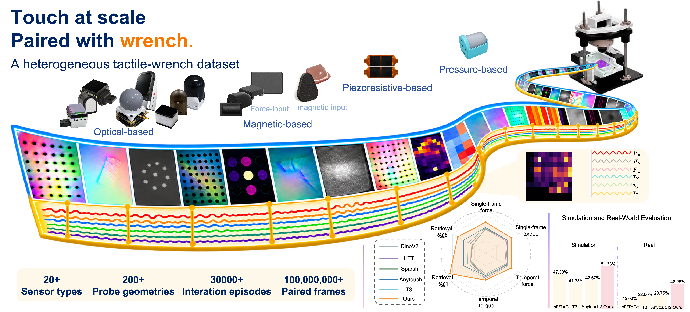
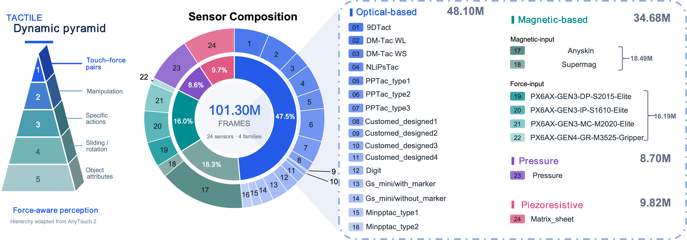
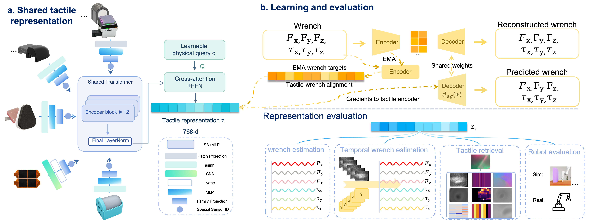

A shared physical reference connects tactile observations across diverse sensors.
Abstract
Tactile sensing is essential for robotic manipulation, yet heterogeneous sensor hardware fragments datasets and algorithms, limiting the reuse of tactile knowledge across platforms. We use six-dimensional interaction wrenches, comprising force and torque, as a common physical reference for connecting heterogeneous tactile observations.
We design a dedicated acquisition platform to record synchronized tactile observations and six-axis wrench measurements, collecting over 100 million paired frames from 24 tactile sensors. Building on this dataset, TaF-Foundation jointly learns tactile and wrench representations through wrench reconstruction and representation alignment. We evaluate the learned representations on wrench estimation, cross-sensor retrieval, adaptation to unseen sensors, and robotic manipulation.
Stronger cross-sensor representations.
On the core benchmark, TaF-Foundation improves over the strongest evaluated baseline for each metric.
Single-frame force estimation error
Force RMSE decreases from 2.799 N to 2.321 N.
Cross-sensor retrieval R@1
Retrieval accuracy rises from 21.27% to 34.38%.
Each result is compared with the strongest baseline for that metric.
Touch at scale, paired with wrench.
A synchronized acquisition platform brings diverse tactile sensors into a common physical space.
The dataset will be released upon acceptance of the paper.

Sensor coverage across heterogeneous tactile sensing mechanisms.
One physical reference, many sensors.
Sensor-specific input adaptation and a shared tactile encoder learn representations grounded in measured interaction forces and torques. During inference, the tactile encoder operates without external force measurements.

From synchronized data acquisition to a shared tactile representation and downstream evaluation.
From data to representation.
Explore the acquisition device, diverse tactile observations, and the representation learning pipeline.
Data acquisition device
Heterogeneous tactile observations
Learning pipeline
Get in touch.
If you are interested in TaF-Foundation, we would be delighted to hear from you.